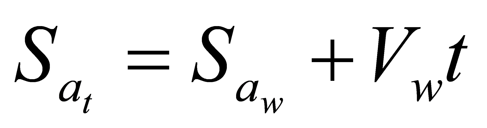
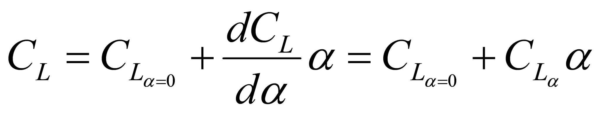
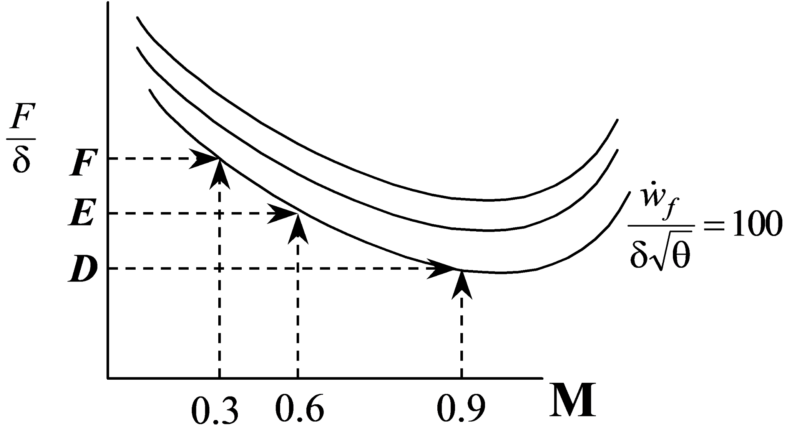

12 12 Fixed-Wing Performance Standardization**
12.1 Recurring Abbreviations
12.2 Standardization Techniques
Difference Method, Ratio Method
12.3 Takeoff Distance
12.3.1 Empirical Standardization Method
12.3.2 Takeoff Distance Prediction
direct approximation of takeoff ground roll,
total takeoff distance
12.4 Landing Distance
12.4.1 Empirical Standardization Method
12.4.2 Landing Distance Prediction
direct approximation of landing ground roll,
direct approximation of the landing air distance,
exact prediction of landing performance,
fixed time increment approach
12.5 Climb/Descent Acceleration
. 12.5.1 Climb/Descent/Acceleration Prediction
12.5.2 Correcting to Standard Climb Rate
12.5.3 WAT Limits
12.6 Level Turn Performance
12.6.1 Sustained Level Turn Performance Prediction
12.6.2 Sustained Level Turn Performance Correction
12.6.3 Level Limit Turn Performance Correction
12.7 Reciprocating Engine Cruise Performance
12.7.1 Power Standardization
12.7.2 Fuel Flow Standardization
12.7.3 Endurance Optimization and Prediction
12.7.4 Range Optimization and Prediction
12.8 Jet Aircraft Cruise Performance
12.8.1 Thrust Standardization
12.8.2 Fuel Flow Standardization
12.8.3 Endurance Optimization and Prediction
12.8.4 Range Optimization and Prediction
12.9 References
12.1 Recurring Abbreviations (references 10.5.1-10.5.5)
a acceleration
BHP brake horsepower
BSFC brake specific fuel consumption (fuel flow per horsepower per hour)
CD drag coefficient
CDiOGE induced drag coefficient out of ground effect
CDiIGE induced drag coefficient in ground effect
cg center of gravity
CL lift coefficient
CLIGE lift coefficient in ground effect
CLOGE lift coefficient out of ground effect
D drag
Fn net thrust
Fg gross thrust
Fe ram thrust
Fex excess thrust
F/δ corrected thrust
g reference acceleration due to gravity (32.174 ft/sec²)
GECL ground effect correction factor for lift coefficient
GECD ground effect correction factor for drag coefficient
H, h geopotential altitude
Hc pressure altitude
L lift
LW lift of the wing
M Mach number
m mass
Nxw longitudinal load factor along flight path (wind axis)
Nzw, nz load factor normal to flight path
P power output
Pa ambient pressure
Po std ambient pressure sea level (2116.22 lb/ft² = 29.921 in Hg)
Piw standard day sea-level power required
Pm mission-day power required
Ps specific excess power
Ps standard power required
Pt test-day power required
q dynamic pressure
R range
R/C rate of climb
Rn Reynolds number
RF range factor
S reference wing area
Sa horizontal air distance
Sg ground roll
SLD total landing distance
SR specific range
STO total takeoff distance
T ambient air temperature (absolute)
T thrust
To ambient temperature sea level standard (288.15 °K=15.0 °C)
V inertial speed
Vc calibrated airspeed
Ve equivalent airspeed
Viw standard day sea-level true airspeed
VT true airspeed
VTt test true airspeed
VTs test true airspeed
Wt test weight
Ws weight standard
Fuel Flow
 standard day sea-level fuel flow
standard day sea-level fuel flow
€
α angle of attack
β sideslip angle
δ ambient air pressure ratio
σ ambient air density ratio
ιT thrust incidence angle
γ flightpath angle
φ bank angle
μ rolling coefficient of friction
ω turn rate (rad/sec)
12.2 Standardization Techniques (ref 12.5)
Performance data is usually corrected to “standard” conditions which are specified values of weight, altitude, cg and Mach number. The process also corrects data to some standard ambient air temperature, usually defined by the 1976 U.S. Standard Atmosphere. In some cases the data is corrected to “standard hot” day or “standard cold” day conditions which are a specified increment relative to the true standard conditions.
The standardization process usually relies on models of drag, thrust (or power), fuel flow, and propeller efficiency if appropriate. The overall principle is to collect test data as near as practical to standard conditions (+/-10%) and correct the results to standard using the models. Even with a 10% modeling error, correcting test data that is 10% from standard leads to only 1% total error in the standardized results.
The most common of the two standardization methods is the
difference method which adds a correction to the test day parameter. This correction is the difference between the model predictions for standard and test conditions:
Ps = Pt + (Ps’ - Pt’) (Eq’n 12.1)
where
Ps = standardized parameter
Pt = test day parameter
Ps’ = standard day parameter predicted by models
Pt’ = test day parameter predicted by models
The parameter of interest can be one of the basic modeling values such as thrust, drag, power, or fuel flow. The parameter can also be the end result of the predictive process, and may include values like takeoff/landing distance, climb/sustained turning capability, or cruise range.
The ratio method is the other standardization process. It corrects to standard conditions by multiplying the test values by a correction factor. This factor is the ratio of the model predictions for standard and test
conditions.
Ps = Pt (Ps’ / Pt’) (Eq’n 12.2)
The preferred approach is whichever gives the lowest total error. If the prediction models are in error by approximately a constant percentage, then the ratio method yields the least error. If the models are in error by approximately a constant magnitude, then the increment method yields the least error. Less exact empirical methods can also be used.
12.3 Takeoff Distance (refs 12.1, 12.2, 12.5)
The total takeoff distance is the sum of the ground roll distance (Sg, from brake release to main wheel liftoff) and the horizontal component of the air distance (Sa, from liftoff to main gear reaching either 35 or 50 feet altitude-depending on the requirements).
STO = Sg + Sa
Both Sg and Sa can be standardized using the increment or ratio method, or by empirical relations. The empirical methods are useful when detailed aircraft models are not available. The more exact process of predicting takeoff distance using models is described in section 12.3.2.
12.3.1 Empirical Standardization Method
First correct for the effects of the test day wind. Define headwind velocity as Vw , liftoff true airspeed as VLO, and test day ground roll as Sgw. With a typical variation of thrust per headwind, estimate the test day zero-wind ground roll (Sgzw) using the following empirical equation:
If the average thrust is not appreciably affected by velocity, then the exponent should be 2.0 in lieu of 1.85. The zero-wind air distance (Sat) correction is

where t is the time from liftoff to 35 (or 50) feet altitude.
The second correction is for the effect of runway slope (θ, positive uphill) and therefore applies only to the ground roll. Correct the above zero-wind distance (Sgzw) to the test day zero-slope distance (Sgt) as follows:
If the average excess thrust is not known, then approximate Fex as that at 70% of the liftoff airspeed or from the zero-wind ground roll distance:
After correcting the test day distance to zero wind and slope, use the following empirical equations to correct for non-standard weight, density, and temperature. Any desired values can be treated as the "standard" conditions.
| Aircraft Propulsion Type | Standard Day Distance |
|---|---|
Fixed pitch propellers
(neglect temp correction for constant rpm evaluation)
|
|
Turbo-propeller aircraft
(for heavy aircraft, replace 2.3 & -1.2 with 2.6 & -1.5 respectively)
|
|
Large jet aircraft
(for lights jets, replace 2.3 & 0.7 exponents with 2.6 & 1 respectively)
|
12.3.2 Takeoff Distance Prediction (refs 12.1, 12.5)
Estimating takeoff ground roll without numerical methods
Define
V = airspeed
VTO = liftoff airspeed
Sg = ground roll distance
Sw = reference wing area
Fex = excess thrust
Fn = net thrust
CLIGE = lift coeffient in ground effect
CDIGE = drag coefficient in ground effect
W = aircraft weight
m = rolling friction
g = acceleration due to gravity
A = acceleration = g*Fex/
Assuming zero initial speed for takeoff run, ground roll distance
Where Fnavg may be estimated as the average of static thrust and net thrust at liftoff airspeed. If the initial airspeed is non-zero, its value should be inserted into Equation 10.3 in place of VL/O and the answer subtracted from the zero-wind case.
where μ is the rolling friction coefficient (typically between 0.015 and 0.025 for hard dry runways), and
CLIGE is the lift coefficient in ground effect while at ground roll attitude.
Estimate CLIGE by determining the out-of-ground-effect lift coefficient (CLOGE) at the ground roll angle of attack and correcting it as follows: n
CLIGE = CLOGE GECL
where the ground effect factor, GECL = \[0.8609 --0.6282 log~10~(*h/b*)\] and h is the wing height above the surface and b is the wingspan. The above correction is not used above the height that predicts
GECL < 1
CDIGE is the induced drag coefficient while in ground effect. Estimate this by determining the out-of-ground-effect drag coefficient (CDiOGE ) at the appropriate angle of attack and correcting it as follows:
CDiIGE = CDiOGE GECD
where the ground effect factor, GECD = \[0.2412 \ln(*h/b*)+1.0829\] The above correction is not used above the height that predicts
GECD > 1
A direct approximation of takeoff air distance requires the desired speeds at liftoff and at 50 feet (typically 1.1Vs and 1.2Vs, respectively). It also requires an estimate of the average excess thrust as the aircraft climbs out of ground effect.
A direct approximation of the total takeoff distance (STO) can be calculated as the sum of the ground and air distances or can be estimated by multiplying the ground roll distance by a “planform factor” (Fpl).
* *
STO = SgFpl
Fpl combines the effects of wing type, thrust-to-weight ratio, and pilot technique. The following values characterize the typical aircraft.
straight wing: Fpl = 1.15
swept wing: Fpl = 1.36
delta wing: Fpl = 1.58
A more exact prediction of takeoff performance (ref 12.5) requires accurate thrust and drag models and an integration of the aircraft’s velocity over the takeoff time. This is equivalent to a double integration of the aircraft’s acceleration or its specific excess thrust.
This double integration can be performed numerically or graphically. Alternately, use planar kinematics and sum the distances required to accelerate between incremental true airspeeds from brake release (V0) to the true airspeed when the aircraft reaches the takeoff altitude (V50’).
Both methods above are typically split into pre-rotation ground roll,
rotation/post-rotation ground roll, and airborne segments. Both methods require calculation of the excess thrust, addressed below.
Solving for the excess net thrust during the ground roll for either takeoff or landing cases requires a simultaneous solution of the three equations of motion along the aircraft’s longitudinal & vertical axes and about the pitch axis. These equations (in the above order) are as follows:
* *
Fex + μnwRnw + μmRm = \[*F~g~*cosι~T~ + *F~e\ ~*-- *D~wb~* -- *D~t~* -- Wsin*θ~rw~*\]
Rnw+Rm = \[*Wco*s*θ~rw~* -- *L~w~ -- L~t~*\]
(X1 + X2)Rnw = [WcosθrwX2 + Wsinθrw Z1 + {Fgcos(θ+ιT)-Fe}Z1
+ Lt(X3 + X4 – X2) - Lw(X2 – X3) - Dt (Z1 + Z2 )]
where
Fex = excess net thrust
μnw = nose wheel coefficient of friction
(about 0.02 for takeoff, 0.5 for maximum dry runway braking)
Rnw = reaction force (weight) on nose wheel (positive)
μm = main wheel coefficient of friction (positive)
Rm = reaction force (weight) on main wheel (positive)
Fg = gross engine thrust (positive, aligned with engine axis)
ιT = thrust incidence angle (positive denotes thrust that generates lift)
Fe = ram thrust (or drag) due to momentum change of the air outside the engine, measured along drag axis- aligned with relative wind (typically negative at low speed, positive at high speed)
Dwb = aerodynamic drag of wing and body (excludes horizontal tail drag)
Dt = aerodynamic drag of horizontal tail (positive aft)
W = aircraft weight (positive)
θrw = runway slope (positive denotes uphill)
Lw = main wing lift (positive denotes up)
Lt = horizontal tail (positive denotes up)
X1 = distance from nose gear to aircraft cg (positive)
X2 = distance from the main gear to aircraft cg (positive)
Z1 = distance from the ground plane to the aircraft body axis (positive)
θ = aircraft pitch attitude (positive denotes nose up)
X3 = horiz. dist. from wing’s aerodynamic center to aircraft cg (positive)
X4 = horizontal distance from the wing’s aerodynamic center to the horizontal tail’s aerodynamic center (positive)
Z2 = vertical distance from the horizontal tail’s aerodynamic center to the aircraft body axis (positive)
The previous equations were arranged so that the right hand side of each can be abbreviated as A1, A2, and A3 respectively. This step allows for a compact matrix form of the equations using a 3x3 matrix
Solve for Fex by pre-multiplying both sides by the inverse of the first matrix
Although wheel reaction forces are not required for takeoff distance
prediction, they are useful for accurate calculation of rotation capability and for braking effectiveness during landing ground rolls. For takeoff
calculations, several simplifying assumptions can be made such as:
€
μnw = μm = 0.02
Fg >> Fe
Dt = 0
This above approach can be repeated for the segment between rotation and liftoff. This is slightly more complicated because the changing angle of attack alters drag and acceleration.
Precise predictions of the takeoff air distance can be made by applying Equation 12.10 in small increments using accurate models that describe thrust as a function of airspeed and the lift & drag changes due to climbing out of ground effect.
Along with the incremental Sg and Sa calculations, the time to accelerate between the corresponding incremental velocities can be calculated as
12.4 Landing Distance (refs 12.1, 12.2)
The total landing distance (SLD) is the sum of the ground roll distance (Sg, from touchdown to full stop) and the horizontal component of the air distance (Sa, from the screen height to touchdown). The screen height can be either 35 or 50 feet above the surface, depending on the requirements
SLD = Sg + Sa
Both Sg and Sa can be standardized according to the increment or ratio methods described by equations 12.1 and 12.2, or by empirical relations. The empirical methods are useful when detailed aircraft models are not available. The more exact process of predicting landing distance using models is described in section 12.4.2.
12.4.1 Empirical Standardization Method
First correct for the effects of the test day wind. Define headwind velocity as Vw , touchdown true airspeed as VTD, and test day ground roll as Sgw. With a typical variation of thrust per headwind, estimate the test day zero-wind ground roll (Sgzw) using the approach applied to takeoff ground roll:
If the average thrust is not appreciably affected by velocity, then the exponent should be 2.0 in lieu of 1.85.
Apply Equation 12.4 to correct to the zero-wind air distance (where t is the time to descend from the screen height to touchdown).
To correct to a zero-slope runway, apply Equation 12.5 to the zero-wind ground roll distance (note that Fex is negative). If the average excess thrust is not known, then approximate \[*F~ex~* \]avg as that at 70% of the touchdown airspeed. Alternately, approximate \[*F~ex~* \]avg from the zero-wind ground roll distance using
After correcting the test day distance to zero wind and slope, use the following empirical equations to correct the ground roll to standard weight and air density.
Any desired values can be treated as the "standard" conditions.
Correct the air distance to standard weight and air density using the zero-wind air distance as follows (for a 50-foot screen height)

where hv is the specific kinetic energy change during the air phase. For the case of a 50-foot screen height, this term is calculated as
12.4.2 Landing Distance Prediction
With reasonably precise models available, the landing distance can be predicted through calculation. Test distances can then be standardized using either the increment or ratio method (Equations 12.1-12.2).
A direct approximation of landing ground roll can be obtained by applying the same Equation 12.7 used for the takeoff case. This method requires a value for the average net thrust (Tavg) across the landing roll speed range and reasonable values for the wheel braking friction coefficient (0.35<μ<0.5 for typical dry runway max braking). The same equations for estimating ground effect also apply.
A direct approximation of takeoff air distance including the flare requires the desired lift and associated drag coefficients, the thrust, and the applied normal load factor during the landing flare (n = 1.15).
A more exact prediction of landing performance requires
accurate thrust and drag models and an integration of the aircraft’s velocity across the landing time. This is equivalent to a double integration of the aircraft’s acceleration as shown in Equation 12.12. This double integration can be performed numerically or graphically. Similarly, Equation 12.13 can be adapted for landing as follows:
As with the takeoff case, this equation is usually broken into the air phase and the ground roll phase. Calculation of excess thrust during the ground roll needs to consider the changing weight on the wheels and associated braking force. This requires a simultaneous solution of the three equations of motion along the aircraft’s longitudinal & vertical axes and about the pitch axis, previously shown as Eq’ns 12.14-12.16.
Precise calculation of excess thrust during the air phase must consider the change in normal and longitudinal load factor during the flare and the changes in lift and drag coefficients due to entering ground effect (previously described).
If the desired flare technique is some schedule of flight path angle (γ) versus altitude, then the normal load factor can be calculated from γ and the rate of γ using
The longitudinal load factor can be calculated as
* *
where
An alternate method of calculating distance is the fixed time increment approach. The following air distance example is based on a constant angle of attack landing technique (ref 12.5).
Fixed inputs Initial inputs
angle of attack, α initial ground speed, Vgo
wing area, S initial air distance, Sao = 0
air density, ρ initial altitude, ho
weight, W initial sink rate, hodot
wingspan, b initial lift coefficient, CLOGE
head wind, Vw wing aspect ratio, AR
net thrust, Fn (Fn = Fg cosα –Fe) wing Oswald efficiency factor, e
time increment, ∆t ( 0.05 sec works well)
height of wing above ground when on gear, hwing
* *
Initial calculations initial true airspeed, VTo = Vgo + Vw
initial glide slope, γo =sin-1 \[*h~o~*dot\]/ VTo
initial load factor, Nz = cosγo (assumes dγo/dt =0)
initial trim speed, VT =\[2*N~z~W*/*ρC~L~S*\]1/2
Incremental calculations
(values with prime symbols represent the result of the previous iteration).
1) CL = CLOGE GECL = CLOGE\[0.8609 --0.6282 log~10~(*h/b*)\]
2) L = 0.5NzWρCLSVT2
3) Nz = L/W
4) γdot = g(Nz –cosγ)/VT
5) γ = \[*γdot*\]‘∆t +γ’
6) hdot = VT sinγ
7) h = (hdot + \[*h*dot\]‘)∆t/2 + h’
8) CDiIGE = CDiOGE GECD = \[*C~L~*^2^/π*AR*e\]\[0.2412 \ln(*h/b*)+1.0829\]
9) CD = CDo +CDiIGE
10) drag, D = CDρSVT2/2
11) Fex = Fn - D
12) Nx = Fex/W
13) Vdot = g(Nx - sinγ )
14) Vg = Vg’ +Vdot(∆t)
15) Sa = (Vg + Vg‘)∆t/2 +Sa’
12.5 Climb/Descent/Level Acceleration (ref 12.4)
Standard performance can be determined either by predicting
results using (flight test validated) models or by correcting individual flight test climb/acceleration results to standard conditions
Performance predictions require accurate net thrust and
aerodynamic models. Net thrust is the sum of the gross thrust and ram drag, while the aero model includes the drag polar and lift curve.
Corrections to individual climb/accelerations tests require models that only show the change in thrust & drag between test and standard conditions. The following sections address both the prediction and correction approaches.
12.5.1 Climb/Descent/Acceleration Prediction
According to basic energy theory, an aircraft’s specific excess power (Ps) is related to the change in kinetic and potential energy as follows
where V is technically inertial speed. True airspeed and an assumption of zero wind is usually used instead of inertial speed. Since aircraft typically have negligible weight change during a maneuver, the above
reduces to
This shows not only how climb rate or acceleration performance can be predicted, but also shows how the climb and acceleration capabilities can be exchanged at any given specific excess power. Dividing this equation through by V shows the relation between specific excess thrust and climb angle, γ
.
When predicting climb performance capability using this approach, iterations may be required because the resulting climb angle affects the normal load factor (Nz = cosγ) and the therefore the induced drag.
12.5.2 Correcting to Standard Climb Rate
The below sequence corrects results at the test q and (usually) pressure altitude
(i.e., Ve test = Ve std, and Htest =Hstd).
1) If the test day vertical velocity is measured by timing pressure altitude changes, then first correct the altimeter readings for instrument error and then convert the indicated pressure altitude rate to geometric (tapeline) climb rate as follows
2) Equation 12.25 yields the climb rate correction that accounts for the change in power (or thrust) between test and standard days (at the test weight and velocity)
where ∆P or ∆Fn comes from engine models. For reciprocating engines without models that can predict this power change, estimate the correction using only a standard day power chart and the following
equation
3) A changing horizontal headwind with altitude will alter climb results. If this change (dVw/dH) is known, then add the following correction to the tapeline climb rate
Usually the exact wind shear profile is unknown. In this case, fly perpendicular to the known crosswind direction and repeat each climb speed at the reciprocal heading. After completing the remaining corrections listed below, average the reciprocal results to obtain a standard climb rate.
4) If the climb is flown at constant indicated airspeed or Mach, then true airspeed will change with air density. Correct for any change in true airspeed with the following “acceleration factor” correction
5) Combine the previous corrections then multiply this by the “inertial correction” factor that accounts for the inertial effects of changing the weight from test to standard conditions
6) To the above result, add a correction for the change in induced drag due to weight change.
Summary of climb rate corrections
Equation 12.27 can also be used to correct descents, level accelerations, and level decelerations to a standard climb rate. The primary difference is that for level accelerations, the accelerations factor is the dominant term while the indicated climb rate is near zero.
12.5.3 Weight/Altitude/Temperature (WAT) Limits
To ensure safety, aviation authorities specify minimum climb gradients (γreq’d) for many aircraft operations. The most straight forward way to comply with the specified gradients is to document the maximum allowable weight at various pressure altitude/temperature combinations.
Assuming the test day CL for best γ equals that for any other day, calculate the maximum allowable weight by applying the following correction to the best test γ results.
where ∆Fn (= Fnstd -Fntest ) comes from the engine model. To ensure accuracy, the test configuration (i.e., one engine inoperative) must equal the standard configuration. Level acceleration results are not an acceptable substitute for actual climb data.
12.6 Level Turn Performance (ref 12.1)
Standard level turn performance can be determined either by
predicting results using (flight test validated) models or by correcting
individual turn results to standard conditions. It is possible to predict turn performance using climb or level acceleration data, but this approach is not always accurate and should be validated with actual turn results.
Performance predictions require accurate net thrust and aero
models (drag polar and lift curve). Corrections to test day turn results
require models that only show the change in thrust & drag between test and standard conditions.
The following sections address both the prediction and correction approaches. For either approach, load factor (nzw) is usually determined first, then the corresponding turn rate (ω-radians/sec) and radius (R-ft) are calculated using the equations below.
12.6.1 Sustained Level Turn Performance Prediction
1) At the desired speed, altitude, temperature, and throttle setting use the
engine model to determine the gross thrust (Fg). Sophisticated models may show this to be a function of the inlet angle of attack as well.
2) At the same conditions, use the engine and airframe models to determine the ram drag (Fe).
3) Calculate net thrust as Fn = Fg cos αF +Fe where αF = (α + ιT) and is ιT the incidence angle of the thrust line (TED positive).
4) The total lift is the sum of the wing lift and the thrust lift:
L = LW + Fg sinαF.
Since L = nzwW , then LW = nzwW - Fg sinαF
5) For any sustained turn, the net thrust equals the drag

Solving for load factor gives
For any combination of weight, altitude, and airspeed, calculation of the standard sustained load factor requires knowledge of the gross thrust, ram drag, drag polar (CD0, e), and angle of attack.
6) To determine the standard angle of attack, start with the lift curve slope model

Rearrange to solve for α
€
€
Because α cannot be solved for explicitly, calculate it using successive iterations of Equations 12.29 and 12.30.
In cases where
the angle of attack can be roughly estimated without significant error to the final result.
12.6.2 Sustained Level Turn Performance Correction
The best method for obtaining standardized sustained level turn data is to correct actual level turn results to standard conditions. It is also possible to correct level acceleration or climb data to give standard level turn results. This approach may not work as well since any drag polar or engine model errors will be magnified. Additionally, inlet distortion that accompanies actual turn thrust is different during (low angle of attack) climbs and accelerations.
The equation below corrects any combination of test day climb, turn, and acceleration to a load factor for a sustained turn at the same dynamic pressure but at standard conditions.

then the above equation can be closely approximated as
where ∆Fex = Fgstd(cosαFstd) - Fgt(cos αFt)
The primary difference between using turn, accel, or climb test data is the dominant term in the above corrections. In all cases, the test and standard day thrust values come from engine models.
12.6.3 Level Limit Turn Performance Correction
A limit turn is one in which the aircraft performs a level turn beginning from maximum speed and maximum load factor and continues to decelerate at the Nzb limit until reaching the maximum CL . At this point, the aircraft continues its level turning deceleration at the lift limit. This maneuver is also known as a “slow-down” turn.
Test day limit turn data is corrected to a standard specific excess power (Ps) for each given combination of altitude, Mach number and load factor (or AOA) limit. The following correction accounts for changes in trim drag, weight, and atmospheric affects on thrust.
where
and
where
As with the sustained level turn case, one cannot solve explicitly for αF, so either assume an approximate value or iterate until a solution converges.
In For the simplified case where δt = δs, cgt = cgstd , and sinαF = 0, then the above equation reduces to
12.7 Reciprocating Engine Cruise Performance (ref 12.1)
Cruise performance standardization consists of correcting test day range and endurance results to standard conditions. Standard conditions are typically the standard aircraft weight & cg location, the nearest 5,000 ft increment of pressure altitude, and standard ambient temperature at that altitude. Although not included in this section, additional corrections can be made to adjust fuel flow to a standard
heating value and to adjust the thrust and fuel flow for the slight gravity effects due to changes in latitude and centrifugal relief (see section 3.2).
Although any weight can be called “standard,” several are quite common. General aviation aircraft typically have the test data corrected to the maximum takeoff weight. Transport aircraft often use a mid-mission weight (maximum payload and one-half fuel) as standard, and fighter/attack aircraft typically use full ordnance and half internal fuel as standard for any given configuration.
Once standard cruise results are documented, mission planning can be conducted by reversing the standardization equations to the desired “mission” conditions. If desired, test day results can be directly corrected to mission conditions by simply treating the mission conditions as standard. These options are shown below.
It is common practice to correct test data for only minor changes in altitude & temperature conditions. Because large changes in Mach and Reynolds numbers alter drag polars and engine efficiency, it is not common practice to correct results across altitude differences of more than 5,000 feet. This leads to a series of results separated by altitude.
.
12.7.1 Power Standardization
If fuel flow is directly proportional to power output only, the power and optimal velocity for cruise performance can be determined from a power required curve as shown below.
To correct the power required curve to any standard altitude/weight condition, the usual approach is to treat the lift coefficient as the anchor (CL test = CL std). This leads to the following power and velocity standardization equations
Because the drag polar of low performance propeller aircraft generally collapses (generalizes) well to a single curve, it is often acceptable to correct all power required data to a single standard altitude/weight condition. When this condition is chosen to be standard day sea level at maximum weight, the above correction simplifies to what is known as the “Piw ~Viw” values.
Although all points along the test day power curve can be standardized, the most useful points are those for best range and endurance. When corrected to standard conditions, the performance of the test aircraft can be fairly compared to that of another aircraft which has also been corrected to the same flight conditions.
Additionally, once the standard power and velocity are known and documented, the required power and airspeed for any “mission” conditions can be predicted by reversing Equations 12.36 as follows
The power & optimal speed for best mission range (and mission
endurance) are determined by applying the above equations to correct the points noted on the above figure. To correct directly from test conditions to mission conditions, apply Equation 12.35 and substitute mission weight and density in lieu of standard values.
12.7.2 Fuel Flow Standardization
Because reciprocating engine fuel flow is essentially
proportional to power output, Equations 12.35 and 12.36 can be modified to correct the test fuel flow to standard values. For the following standardization equations to be accurate, the propeller efficiency and brake specific fuel consumption (BSFC) must be the same for test and standard days.
Because BSFC is affected by engine RPM (due to friction losses), fuel flow results at one engine RPM are never corrected to another RPM. Separate tests must be performed for each engine speed of interest. BSFC may also be affected by ambient air pressure and temperature. If the relation between fuel flow and power can be represented with a model as shown, then the fuel flow is a linear function of BSFC.
* *
If the values for b and BSFC are known for both the test and standard conditions, then test fuel flow can be more exactly corrected to standard weight and density conditions as follows
Note that this correction requires only a knowledge of the ratio of test and standard BSFC values. If both values have the same percent error, then the effect is self-canceling. The above equation also corrects for changes in fuel flow due to changing propeller efficiency.
12.7.3 Endurance Optimization and Prediction
To determine the optimum endurance flight profile and time aloft for any condition (at the same RPM as the test condition), plot the test day specific endurance parameter (SEP) vs the test day lift coefficient (CL)
The maximum endurance occurs at the peak of the SEP curve. The associated lift coefficient is the optimum endurance condition for the aircraft (at that same RPM). The results of this test change with engine speed. If the aircraft operates at this optimum CL or any other constant CL , then the total endurance time (t) while at constant altitude can be calculated from this test day data using
* *
where the SEP comes from the above test day curve at whatever CL is chosen. WI is the total aircraft weight at the start of the endurance segment and WF is the final weight of the endurance segment. This equation accounts for the effect of how a change in air density alters the power required and the subsequent fuel flow, but does not account for changes in propeller efficiency, BSFC, or the fuel flow intercept, b.For endurance at a constant CL and VT, use the following equation and the SEP and test weight associated with the lift coefficient at the start of the endurance segment.
12.7.4 Range Optimization and Prediction (ref 12.1)
To determine the optimum range flight profile and distance for any condition (at the same RPM as the test condition), plot the test day range factor (RF) vs the test day lift coefficient (CL)
The maximum range occurs at the peak of the RF curve. The associated lift coefficient is the optimum range condition for the aircraft (at that same RPM). The results of this test change with engine speed. If the
aircraft operates at this optimum CL or any other constant CL , then the range at constant altitude can be calculated from this test day data using
where the RF comes from the above test day curve at whatever CL is chosen. WI is the total aircraft weight at the start of the range segment and WF is the final weight of the range segment. Although not explicitly shown in this equation, the correction does account for changes in air density, but does not account for changes in propeller efficiency, BSFC, or the fuel flow intercept, b.
For cruise at constant airspeed and altitude, use the following equation and the RF associated with the lift coefficient at the start of the cruise segment.
12.8 Jet Aircraft Cruise Performance (ref 12.1)
Refer to section 12.7 for a general discussion of cruise
performance standardization.
.
12.8.1 Thrust Standardization
If fuel flow is directly proportional to net thrust output only, the thrust and optimal velocity for cruise performance can be determined from a thrust required curve as shown below.
Because jet aircraft typically cruise at speeds where changes in Mach number affect the drag polar, it is customary to treat both the lift coefficient and Mach numbers as anchors (CL test = CL std , M test = Mstd). In terms of Mach number, cruise (nz = 1) lift coefficient is calculated as
From this relation, the only way to match test & standard values for both CL and M is to match test & standard values for W/δ . In this case, the test day net thrust required curve can be corrected to standard conditions as follows
Although all points along the test day thrust curve can be standardized, the most useful points are those for best range and endurance. When corrected to standard conditions, the performance of the test aircraft can be fairly compared to that of another aircraft which has also been corrected to the same flight conditions. Additionally, once the standard thrust and velocity are known and documented, the required power and airspeed for any “mission” conditions can be predicted by reversing Equations 12.45.
12.8.2 Fuel Flow Standardization
Both the thrust and fuel flow of a simple (fixed-geometry turbojet) turbine engine are functions of engine speed (N), Mach number (M), ambient pressure (δ), and ambient temperature (θ). Dimensional analysis and experimental results show these parameters to be related approximately as illustrated in the figures below.
Thrust specific fuel consumption (TSFC ) is defined as the fuel flow per thrust. At any given level of corrected fuel flow, the above figures can be cross-plotted onto a single figure that relates corrected thrust (F/δ) to corrected fuel flow at various Mach numbers.
.

The slopes of the above figure exaggerate the typical case where TSFC changes with Mach number. If, at any given Mach number, steady increments of corrected fuel flow are evenly spaced vertically, then
Standard fuel flow can be determined from these relations. If flight test data is to be corrected from test to standard conditions at the same CL and M , then the CD will also be the same for both test &
standard conditions. Because thrust equals drag* during cruise, the
following relations show that corrected thrust (F/δ) must be the same for test and standard conditions
• technically Fn cos(α+ιT)+Fe = D, where Fn = net thrust, Fe = ram thrust,
and ιT is the thrust incidence angle
If Mach number and F/δ are equal for both test & standard
conditions, then the previous cross plot shows that corrected fuel flow must also be the same for both conditions.
This relation allows standard fuel flow to be calculated as
12.8.3 Endurance Optimization and Prediction
Test day results are corrected to standard results at the same Mach, CL (and therefore the same W/δ , according to Eq’n 12.44) as the test condition. For each W/δ ratio tested, plot the test day corrected fuel flow vs the test Mach number.

At any given W/δ , the maximum endurance occurs at the Mach corresponding to the bottom of the curve. This optimal Mach and W/δ define the optimum lift coefficient for endurance (Eq’n 12.44).
The corrected fuel flow for any desired Mach & W/δ combination can be interpolated from the above
figure. Calculate the actual fuel flow using Equation 12.46.
Even with simple turbojets, experience has shown that the above
curves do not generalize well if the desired standard altitudes
are more than about 5,000 ft away from the test alt
If the aircraft maintains flight at any combination of constant Mach & W/δ , then the corrected fuel flow will be constant. For flight at a constant CL, endurance time can be calculated using
* *
where c is the thrust specific fuel consumption at sea level std conditions. WI is the total aircraft weight at the start of the endurance segment and WF is the final weight of the endurance segment. Although not explicitly shown in this equation, the correction process does account for changes in aircraft weight, and ambient pressure & temperature.
12.8.4 Range Optimization and Prediction
As with endurance analysis, test day range results are
standardized at a common Mach & W/δ. Using the same corrected fuel flow vs Mach test data illustrated in section 12.8.3, create a cross plot of range factor (RF) vs Mach number for each W/δ tested.
where range factor can be calculated as

The optimum CL for range at any given W/δ occurs at the Mach corresponding to the top of the curve. The best overall W/δ is the highest. These curves do not usually generalize well if the desired standard altitudes are more than about 5,000 ft away from the test altitudes.
If the aircraft cruises at any combination of constant Mach & W/δ , then the range factor will be constant, and range is calculated as
where RF comes from the above test day figure at whatever Mach & W/δ is chosen. It is often reasonable to interpolate the above test data to define a RF for the desired standard conditions. WI and WF are the total aircraft weights at the start and end of the range segment.
For cruise at constant altitude, fly at a constant CL by allowing the airspeed to decrease with weight. Calculate range from test day results using
For this equation to be valid, use the VTt and fuel flow corresponding to the same CL and altitude of the desired standard conditions. Both of the above correction equations account for changes in aircraft weight and
ambient temperature.
12.9 References
12.1 Lawless, Alan R, “Fixed Wing Aircraft Performance Testing,” Volume III, Professional Textbook Series, National Test Pilot School, Mojave CA, 1998.
12.2 anon, “Performance Flight Testing Phase” notes, USAF TPS , Edwards AFB, CA, 1991.
12.3 Lush, Kenneth J “Standardization of Take-Off Performance Measuresments for Airplanes,” AFFTC Technical Note R-12, USAF Air Research and Development Command, Edwards AFB, CA, circa 1955.
12.4 Roberts, S.C., Light Aircraft Performance for Test Pilots and Flight Test Engineers, NTPS publication
12.5 Olson, Wayne, “Performance Testing Handbook,”
(publication number pending ) AFFTC, Edwards AFB, CA, 1999.